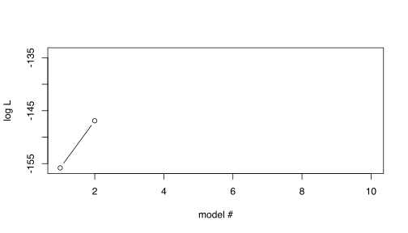
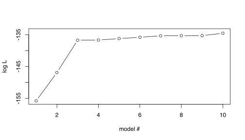

5 Overfitting
We will now look at a general problem in statistical modeling that can be visualized quite well with Likelihoods. We will later look at some solutions to this problem.
5.1 Overfitting | Example data
First, you need some test data to play around with. For simplicity and convenience, you will simulate a toy data from a linear model and use this in the exercises. The advantage for us using simulated data is that we know the ‘truth’, i.e., how the data was simulated and we therefore have oracle knowledge about the true parameter values, e.g., for \(\beta\).
5.1.1 Task | simulation of example data
- The data should comprise 100 samples.
- First generate 10 variables \((x_1,x_2,\ldots, x_{0})\) from a uniform distribution (use the function
runif) and store them in a Matrix \(X\). - Use an intercept \(\beta_0=3\)
- Generate effect sizes \(\beta_1, \beta_2, \beta_3\) from a Uniform distribution in the interval \((0.5, 1.0)\) for the 3 first \(X\) variable (use the function
runif); record the ‘true’ effect sizes for reference. - Finally generate outcome variable \(Y\) using a linear model \(Y = \beta_0 + \beta_1 x_i + \beta_2 x_2 + \beta_3 x_3 + \epsilon\), with \(\epsilon\sim N(0,\sigma^2=1)\) (i.e., the residuals are drawn from a Normal distribution with mean=0 and standard deviation=1, Tip: use the R function
rnorm).
# To obtain exactly the same result as in the demo, set seed to 85
set.seed(85)N=100 # number of samples
P=10 # number of variables
# Draw variables, x_{i,1},...,x_{i,P} for all N individuals, from a uniform distribution in interval (0,1) (this is the default interval for runif)
X=matrix(round(runif(N*(P+1),min=0, max=2)), nrow=N, ncol=P)
# generate a y variable from a multivarite lm of 3 first X variables only
# intercept
b0=3
# effect sizes for first three variables
b=c(runif(3, min=0.5, max=1.0))
# generate y
Y = b0 + X[,1] * b[1] + X[,2] * b[2] + X[,3] * b[3] + rnorm(N)5.2 Overfitting | Model comparison
Now consider the following two linear models for our data
\[\begin{eqnarray} y & \sim & \beta_0 + \beta_1 x_1 & (1) \\ y & \sim & \beta_0 + \beta_1 x_1 + \beta_2 x_2 & (2) \end{eqnarray}\]
What are the max Likelihood estimates of the two models? (we can use the R function logLik in the stats package)
5.2.1 Task | plot two likelihoods
- Create linear models (use
lm) for the two models, and - store the likelihood (use
logLik) in a vector - plot the likelihoods
require(stats)
ll= vector()
for(i in seq(1,2)){
Xi=X[,seq(1,i)]
ll[i] <- logLik(lm(Y~Xi))
}
# plot likelihoods for models with 1 and 2 vaiables
plot(ll, ylab="log L", xlab="model #", type = "b", xlim=c(1,P), ylim=c(floor(min(ll)),ceiling(max(ll))))
# xlim and ylim not really necessary here, but I can reuse the plot statement below, so the plots look similar Show result

… 2 variables are clearly better than 1 variable – What if we add more variables?
5.2.2 Task | plot all likelihoods
- Now repeat this for the sequence of models obtained by creating the next model by simply adding the next \(X\) variable in order.
# compute loglikelihood (ll) for all models including variables
# 1-i, for i <= P; store results in vector ll
ll= vector()
for(i in seq(1,P)){
Xi=X[,seq(1,i)]
ll[i] <- logLik(lm(Y~Xi))
}
# plot ll for all models
plot(ll, ylab="log L", xlab="model #", type = "b", xlim=c(1,P), ylim=c(floor(min(ll)),ceiling(max(ll)))) Show result

5.2.2.1 Think about:
How does the Likelihood behave as more variables are added?
Which is the maximum likelihood model? Is this correct given our oracle knowledge?
What could be the problem with this behaviour? How would we like it to behave?
How can we obtain the desired behaviour?
Some possible answers
Some possible answers
Nested models
Model (1) can be described as a special case of Model (2) with the constraints on \(\beta_2=0\)
Therefore Model (2) will always have equal or better ML than Model (1)
We say that model (1) is nested in Model (2) (which is nested in Model (3) etc.)
Overfitting
- Using our oracle knowledge, we know that the simulated data was generated from the 3 first variables
- thus, the subsequent variables increase ML by modeling noise in data
This is difficult to detect by just looking at the likelihoods
- Solutions
- Seek the simplest model that is “good enough” -> Regularization/Bayesian
Extra Reading
Model comparison | Likelihood ratio test
(Read Extra reading about likelihood ratios under 4.2 first) For nested models \(-2 \max LRT\) is \(\chi^2(d)\)-distributed, with \(d=\) the difference in free params in the two models.
| Compared models | logL 1st model | logL 2nd model | logLR | P-value | Sign at 0.05 |
|---|---|---|---|---|---|
| 1 vs 2 variables | -155.80 | -146.90 | -8.9 | 2.45e-05 | yes |
| 2 vs 3 variables | -146.90 | -136.73 | -10.17 | 6.48e-06 | yes |
| 3 vs 4 variables | -136.73 | -136.69 | -0.04215 | 0.772 | no |
| 4 vs 5 variables | -136.69 | -136.23 | -0.4601 | 0.337 | no |
| 5 vs 6 variables | -136.23 | -135.83 | -0.4016 | 0.37 | no |
| 6 vs 7 variables | -135.83 | -135.35 | -0.4803 | 0.327 | no |
| 7 vs 8 variables | -135.35 | -135.31 | -0.04266 | 0.77 | no |
| 8 vs 9 variables | -135.31 | -135.30 | -0.0002981 | 0.981 | no |
| 9 vs 10 variables | -135.30 | -134.55 | -0.7536 | 0.22 | no |
In our simple test case, the LRT also succeed in picking the correct model. It should be noted that certain issues, such as lnkage disequilibriium, may cause problems for LRT (the example is not optimized to show this).